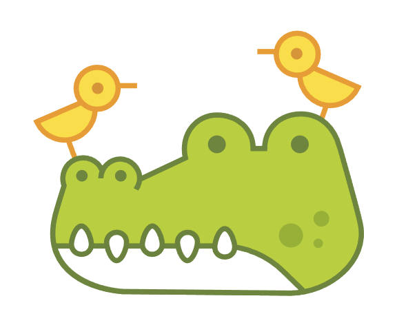

<!DOCTYPE html>
<html xmlns="http://www.w3.org/1999/xhtml"></html>
<html>
    <head>
        <meta charset="utf-8">
        <meta http-equiv="Content-Type" content="text/html; charset=utf-8" />
        <title>Parallax - fullPage.js</title>
        <meta name="author" content="Alvaro Trigo Lopez" />
        <meta name="description" content="fullPage auto-height example." />
        <meta name="keywords"  content="fullpage,jquery,demo,screen,fullscreen,parallax,backgruonds" />
        <meta name="Resource-type" content="Document" />
        <meta http-equiv="refresh" content="0; url=http://alvarotrigo.com/fullPage/extensions/parallax.html" />
        <style>
            *,html{
                margin:0;
                padding:0;
            }
            #sky{
                background:url('bear.png')50% 0;
                position:relative;
                width:100px;
                height:1500px;
                margin:0 auto;
            }

            #sky artivle{
                position:absolute;
                top:750px;
                left:40%;
            }
        </style>
        
    </head>
    <body>
        <section id="sky" data-type="background" data-speed="0.5">
            <article></article>
        </section>
        <script src="https://code.jquery.com/jquery-2.2.4.min.js" integrity="sha256-BbhdlvQf/xTY9gja0Dq3HiwQF8LaCRTXxZKRutelT44=" crossorigin="anonymous"></script>
        <script>
            $(document).ready(function() {
                var wd = $(window);
                $('section[data-type="background"]').each(function(){
                    var bg = $(this);
                    $(window).scroll(function(){
                        var yPos = -(wd.scrollTop() /bg.data('speed'));
                        var coords= '50%' + yPos + 'px';
                        bg.css({backgroundPosition:cord});
                    });
                });
            });
        </script>
    </body>
</html>